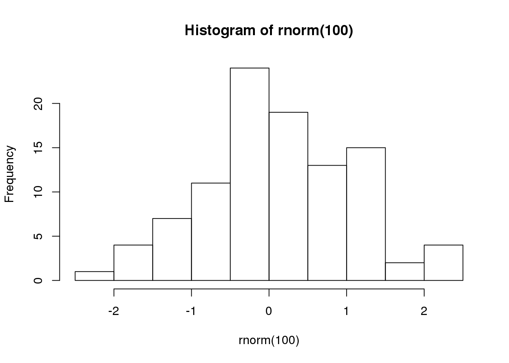

Introduction
Consider Phlebas, first published in 1987, is a space opera novel by Scottish writer Iain M. Banks. Written after a 1984 draft, it is the first to feature the Culture.
The novel revolves around the Idiran–Culture War, and Banks plays on that theme by presenting various microcosms of that conflict. Its protagonist Bora Horza Gobuchul is an enemy of the Culture.
Consider Phlebas is Banks's first published science fiction novel set in the Culture, and takes its title from a line in T. S. Eliot's poem The Waste Land. A subsequent Culture novel, Look to Windward (2000), whose title comes from the previous line of the same poem, can be considered a loose follow-up.
Code sample
#!/usr/bin/python
# This script will monitor templates folder and automatically compile nunjucks html templates on change
import os
import sys
from datetime import datetime
from subprocess import call
from time import sleep
try:
NUNJUCKS_REPO = sys.argv[1]
except IndexError:
NUNJUCKS_REPO = os.getenv("NUNJUCKS_REPO")
try:
TEMPLATES_DIR = sys.argv[2]
except IndexError:
TEMPLATES_DIR = os.getenv("TEMPLATES_DIR")
FILES = {}
TIMER = 1
COLOUR_END = '\033[0m'
COLOUR_GREEN = '\033[92m'
COLOUR_BLUE = '\033[94m'
def check_templates(templates_dir=TEMPLATES_DIR):
file_list = os.listdir(templates_dir)
for item in file_list:
if item.split(".")[-1] == "html":
modified = os.path.getmtime(templates_dir + "/" + item)
if item in FILES:
if FILES[item] != modified:
FILES[item] = modified
precompile(templates_dir, item)
else:
print (COLOUR_BLUE + item + " is being watched" + COLOUR_END)
FILES[item] = modified
precompile(templates_dir, item)
def precompile(tempates_dir, filename):
compiled_filename = filename.replace("html", "js")
path_to_js = tempates_dir + "/" + compiled_filename
path_to_html = tempates_dir + "/" + filename
if os.path.exists(path_to_js):
call("rm -f " + path_to_js, shell=True)
command = NUNJUCKS_REPO + "/bin/precompile --name " + filename + " " + path_to_html
command = command + " >> " + path_to_js
call(command, shell=True)
print(COLOUR_GREEN + datetime.now().strftime("%X" + " " + filename + " ...OK") + COLOUR_END)
if __name__ == '__main__':
while True:
check_templates()
sleep(TIMER)
Plot summary
The Culture and the Idiran Empire are at war in a galaxy-spanning conflict. A Culture Mind, fleeing the destruction of its ship in an Idiran ambush, takes refuge on Schar's World. The Dra'Azon, godlike incorporeal beings, maintain Schar's World as a monument to its extinct civilisation, forbidding access to both the Culture and the Idirans. Horza, a shape-changing mercenary, is rescued from execution by the Idirans who believe the Dra'Azon guardian may let him onto the planet as in the past he was part of a small group of Changers who acted as stewards. They instruct him to retrieve the Mind.
During Horza's extraction, the Idirans also capture a Special Circumstances agent, Perosteck Balveda. However, the Idiran starship on which he is travelling is soon attacked by a Culture vessel, and Horza is ejected. He is picked up by a pirate ship, the Clear Air Turbulence (CAT). He is forced to fight and kill one of the crew to earn a place. The captain, Kraiklyn, leads them on two disastrous pirate raids in which several of the crew perish. After the second raid Horza is taken prisoner by a cult living on an island on the orbital Vavatch. He escapes after killing the cult leader and makes his way to the main city of Vavatch where he finds Kraiklyn, who is playing “Damage”—a high stakes card game.
Having now changed his appearance to mimic that of the CAT captain, Horza follows him back to the CAT, kills him and returns to the CAT meeting the few remaining original crew. He is introduced to a newly recruited member, whom he recognises as a disguised Perosteck Balveda. Culture agents outside try to capture the ship. Horza manages to lift off and as the fugitives warp away from Vavatch, they see the Orbital destroyed by the Culture warships to prevent it from falling into enemy hands. Balveda reveals Horza's identity and he convinces the crew to carry out his mission. A Vavatch drone, Unaha-Closp, has been trapped on the ship and reluctantly joins the team.
They land on Schar's World and search for the Mind in the Command System, a complex of subterranean train stations. They soon discover that the Mind is being hunted by a pair of Idiran soldiers who have killed all the Changers stationed on the planet, and who regard Horza and his crew as enemies, having no knowledge of the Changers’ alliance with the Idirans. Horza has kept Balveda alive, and she is taken into the complex. The CAT's crew encounter the Idirans in one of the Command System stations, and after a firefight apparently kill one and capture the other. After tracking the Mind to another station, the drone Unaha-Closp discovers it hiding in the reactor car of a Command System train. The second Idiran, who had been mortally wounded but not killed, sets one of the trains for a collision course to the station. The captured Idiran, Xoxarle, frees himself and in the ensuing impact and firefight the remaining members of the Clear Air Turbulence are killed. Horza pursues Xoxarle and is fatally injured, but the Idiran is killed by Balveda.
Horza dies soon after Balveda gets him to the surface and the Mind is returned to the Culture. In an epilogue, the Mind becomes a starship, and names itself the Bora Horza Gobuchul.
Characters
List of main characters
Bora
Bora Horza Gobuchul is a Changer and an operative of the Idiran Empire. Horza was one of a party of Changers allowed on Schar's World, and for that reason is tasked by the Idirans with retrieving a Mind that had crashed to the planet. Horza is humanoid, but committed to the Idirans because he despises the Culture for its dependence on machines and what he perceives to be spiritual emptiness.
Balveda
Juboal-Rabaroansa Perosteck Alseyn Balveda dam T'seif, usually referred to as Perosteck Balveda, is an operative of the Culture assigned to track and apprehend Bora Horza Gobuchul. She works for the Special Circumstances branch of Contact, and despite being ambivalent about the methods they use, deeply believes in their objectives.
Kraiklyn
Kraiklyn is the captain of the Clear Air Turbulence.
History
Consider Phlebas, like most of Banks's early SF output, was a rewritten version of an earlier book, as he explained in a 1994 interview:
Phlebas was an old one too; it was written just after The Wasp Factory, in 1984. I've found that rewriting an old book took much more effort than writing one from scratch, but I had to go back to do right by these things. Now I can go on and start completely new stuff.
Criticism
The book was generally very well received as a fast-paced space opera with a morally ambiguous hero and lots of grand scenery and devices. Kirkus Reviews described it as “Overextended and jarring”, but “imaginative and gripping in places.”
Banks said in an interview: There's a big war going on in that novel, and various individuals and groups manage to influence its outcome. But even being able to do that doesn't ultimately change things very much. At the book's end, I have a section pointing this out by telling what happened after the war, which was an attempt to pose the question, ‘What was it all for?’ I guess this approach has to do with my reacting to the cliché of SF's ‘lone protagonist.’ You know, this idea that a single individual can determine the direction of entire civilizations. It's very, very hard for a lone person to do that. And it sets you thinking what difference, if any, it would have made if Jesus Christ, or Karl Marx or Charles Darwin had never been. We just don't know.
Posts
New Post 2
hist(rnorm(100))
New Post Test
Hello R Markdown
R Markdown
This is an R Markdown document. Markdown is a simple formatting syntax for authoring HTML, PDF, and MS Word documents. For more details on using R Markdown see http://rmarkdown.rstudio.com.
You can embed an R code chunk like this:
summary(cars)
## speed dist
## Min. : 4.0 Min. : 2.00
## 1st Qu.:12.0 1st Qu.: 26.00
## Median :15.0 Median : 36.00
## Mean :15.4 Mean : 42.98
## 3rd Qu.:19.0 3rd Qu.: 56.00
## Max. :25.0 Max. :120.00
fit <- lm(dist ~ speed, data = cars)
fit
##
## Call:
## lm(formula = dist ~ speed, data = cars)
##
## Coefficients:
## (Intercept) speed
## -17.579 3.932Including Plots
You can also embed plots. See Figure 1 for example:
par(mar = c(0, 1, 0, 1))
pie(
c(280, 60, 20),
c('Sky', 'Sunny side of pyramid', 'Shady side of pyramid'),
col = c('#0292D8', '#F7EA39', '#C4B632'),
init.angle = -50, border = NA
)
Figure 1: A fancy pie chart.
WhatIsThis
New Post 2
hist(rnorm(100))Hello R Markdown
R Markdown
This is an R Markdown document. Markdown is a simple formatting syntax for authoring HTML, PDF, and MS Word documents. For more details on using R Markdown see http://rmarkdown.rstudio.com.
You can embed an R code chunk like this:
summary(cars)
## speed dist
## Min. : 4.0 Min. : 2.00
## 1st Qu.:12.0 1st Qu.: 26.00
## Median :15.0 Median : 36.00
## Mean :15.4 Mean : 42.98
## 3rd Qu.:19.0 3rd Qu.: 56.00
## Max. :25.0 Max. :120.00
fit <- lm(dist ~ speed, data = cars)
fit
##
## Call:
## lm(formula = dist ~ speed, data = cars)
##
## Coefficients:
## (Intercept) speed
## -17.579 3.932Including Plots
You can also embed plots. See Figure 1 for example:
par(mar = c(0, 1, 0, 1))
pie(
c(280, 60, 20),
c('Sky', 'Sunny side of pyramid', 'Shady side of pyramid'),
col = c('#0292D8', '#F7EA39', '#C4B632'),
init.angle = -50, border = NA
)Figure 1: A fancy pie chart.